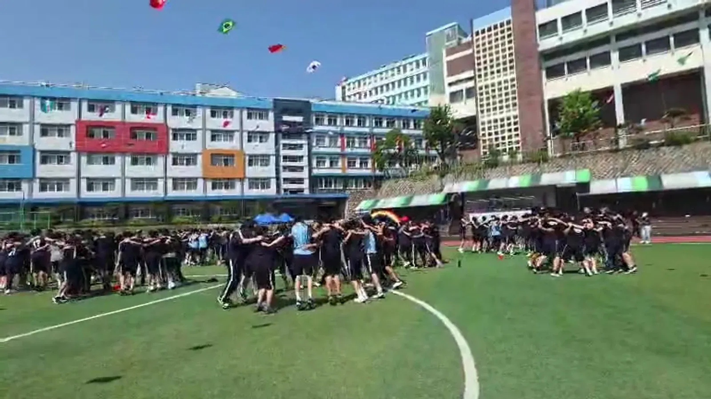
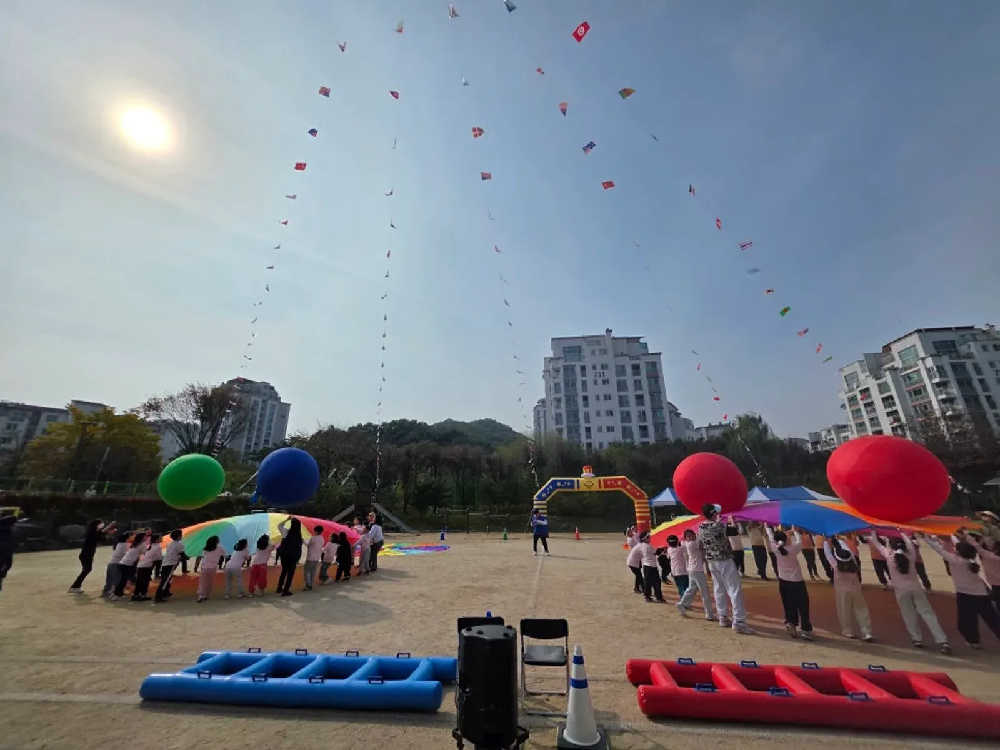
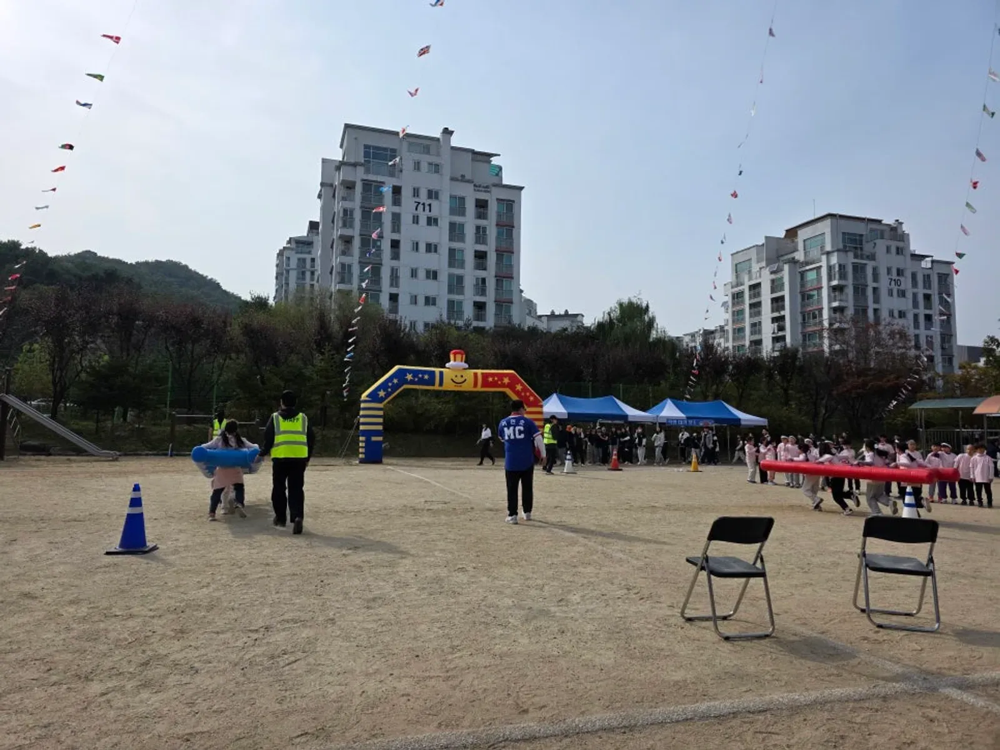

강북 행사 준비 · 2026년 10월 28일
강북 학교 체육대회 대동놀이 — 중 · 고등학교 프로그램 짜는 법
강북 학교 체육대회 대동놀이를 찾는 선생님이 가장 많이 고민하는 것은 반 대항 경쟁과 다 함께 즐기는 시간의 균형입니다. 중 · 고등학생은 승부욕이 강해 반 대항 종목에서 분위기가 뜨거워지지만, 지는 반이 끝까지 흥이 나도록 마무리 순서가 필요합니다. 마지막을 대동놀이로 닫는 체육대회 프로그램 짜는 법을 정리했습니다.

- 같은 프로그램이라도 학년 · 인원 · 운동장이나 체육관 조건에 따라 구성이 달라집니다.
- 상담 때 참가 인원과 학년, MC 진행만 필요한지 프로그램과 운영 물품까지 필요한지를 먼저 알려 주시면 됩니다.
- 반 대항 종목 사이에 랜덤플레이 댄스 · 떼창처럼 승패 없는 참여 순서를 넣으면 지는 반도 끝까지 함께합니다.
- 대동놀이는 어깨동무를 하고 원을 그리며 다 같이 움직이는 마무리 프로그램입니다.
1. 강북 학교 체육대회, 상담 전에 알려 주실 것
힐링엔터테인먼트는 노원 본사에서 강북구청까지 차로 약 5분 · 5.1km(막히지 않을 때) 거리입니다. 강북 안의 학교(수유동 · 미아동 · 번동 · 우이동 등)도 출퇴근 시간에는 더 걸릴 수 있어 당일에는 넉넉히 일찍 출발해 음향과 진행 준비를 마칩니다.
학교 체육대회는 같은 프로그램을 준비해도 학년과 인원, 운동장이나 체육관 조건에 따라 구성이 달라집니다. 그래서 상담할 때 아래를 먼저 여쭙니다.
| 여쭙는 것 | 이유 |
|---|---|
| 학년 · 반 수 · 학생 수 | 반 대항 종목의 회차와 시간이 정해진다 |
| 장소 조건 | 운동장(흙 · 인조잔디)인지 체육관인지 |
| 맡길 범위 | MC 진행만인지, 프로그램과 운영 물품까지인지 |
| 학교 일정 | 점심 · 하교 시간, 다른 학년 수업 여부 |
| 학교가 가진 용품 | 줄다리기 줄 · 바통 · 콘 등 |
2. 중 · 고등학교 체육대회 프로그램 흐름
중 · 고등학생은 처음부터 크게 소리 내기를 쑥스러워합니다. 시작은 반별로 모여 구호를 맞추는 정도로 가볍게 하고, 반 대항 종목으로 열기를 올린 뒤, 승패 없는 참여 순서로 한 번 풀고, 마지막을 대동놀이로 닫는 흐름이 무난합니다.
| 구간 | 구성 예 | 포인트 |
|---|---|---|
| 여는 순서 | 반별 구호 · 몸풀기 | 짧게, 모두 일어서서 |
| 반 대항 1 | 단체 줄넘기 · 공 굴리기 릴레이 | 출발선 · 교대 위치 표시 |
| 참여 순서 | 랜덤플레이 댄스 · 떼창 | 승패 없이 다 같이 |
| 반 대항 2 | 이어달리기 · 줄다리기 | 학년별 대기 위치 고정 |
| 마무리 | 대동놀이 · 시상 | 어깨동무로 원을 그리며 끝 |

3. 대동놀이 — 승패 뒤에 다 같이 끝내는 시간
「대동놀이」는 힐링엔터테인먼트의 시그니처 프로그램입니다. 반 대항 경기가 다 끝난 뒤 학생들이 어깨동무를 하고 원을 그리며 MC의 구령과 음악에 맞춰 함께 움직입니다. 이긴 반과 진 반이 한 원 안에서 섞이기 때문에, 체육대회의 마지막 기억이 점수가 아니라 함께 웃은 장면으로 남습니다.
- 운동장 가운데를 비워 두고, 반 대항이 끝나면 바로 원을 만들 수 있게 안내합니다.
- 음악과 MC 구령이 운동장 끝까지 들리도록 스피커를 양쪽에 둡니다.
- 선생님들도 원 안에 들어오시면 학생들 호응이 커집니다.
4. 운동장 운영 — 반 대기와 경기 진행 나누기
학교 체육대회가 늘어지지 않으려면 진행자가 설명하는 동안 경기용품을 준비하고 학생 이동을 안내하는 역할을 따로 두어야 합니다. 반 대항 종목이 많을수록 대기 반과 경기 반이 섞이지 않게 자리를 정하는 것이 중요합니다.
- 반별 응원석을 운동장 둘레에 정하고 반 팻말을 세웁니다.
- 경기 중인 반은 경기 구역, 다음 반은 대기선에서 기다립니다.
- 출발 신호는 MC가, 용품 정리는 진행 보조 요원이 맡습니다.
- 점수판은 본부석 옆에 두고 종목마다 바로 발표합니다.

5. 견적 문의 항목
자동 견적서에서 항목을 고르고 학교 이름 · 날짜 · 학생 수를 적어 보내 주시면 확인 후 견적을 안내드립니다. 금액은 행사마다 달라 견적서에는 나오지 않습니다.
| 항목 | 내용 |
|---|---|
| 학교 운동회 · 체육대회 | 기획 · 종목 구성 · 진행 |
| 대표 MC 이현호 진행 | 체육대회 전체 진행 |
| 대동놀이 · 참여 프로그램 | 전원이 함께하는 마무리 |
| 체육대회 게임도구 | 대형 공 · 대형 주사위 · 에어사다리 등 |
| 진행 보조 · 운영 스탭 | 경기 진행 · 이동 안내 |
| 음향 (대형) | 운동장 |
현장 사진은 학교 체육대회 대동놀이 이야기에, 강북 지역 안내는 강북 행사 안내에 있습니다. 초등학교 운동회라면 노원 초등학교 운동회 업체 글도 참고하세요.
자주 묻는 질문
MC 진행만 맡겨도 되나요?
네. 종목과 용품은 학교에서 준비하시고 진행과 음향만 맡기셔도 됩니다. 상담 때 맡길 범위를 알려 주세요.
체육관에서도 대동놀이를 할 수 있나요?
체육관 크기에 맞춰 원의 크기와 동작을 바꿉니다. 실내는 소리가 울리므로 스피커 방향도 함께 맞춥니다.
학생 수가 많아 반 대항 종목이 오래 걸릴까 걱정됩니다.
반 수가 많으면 두세 반이 한 번에 겨루는 종목을 섞고, 결승만 따로 치르는 방식으로 시간을 줄입니다. 학년별 대기 위치를 고정해 두면 반이 바뀌는 시간도 짧아집니다.
수학여행 레크리에이션도 하나요?
수학여행 · 청소년 레크리에이션도 하는 일에 있습니다. 떼창 · 랜덤플레이 댄스 같은 참여 순서를 숙소 · 행사장에 맞춰 짭니다.
행사 날짜가 정해지셨나요?
날짜 · 지역 · 인원 · 행사 종류만 알려 주시면 행사에 맞춰 상담 · 견적을 안내드립니다. 행사 중엔 통화가 어려우니 문자 · 카톡을 남겨 주세요.